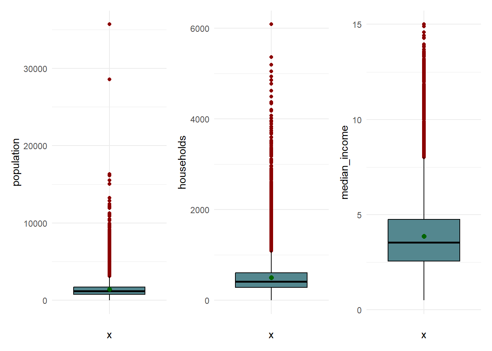
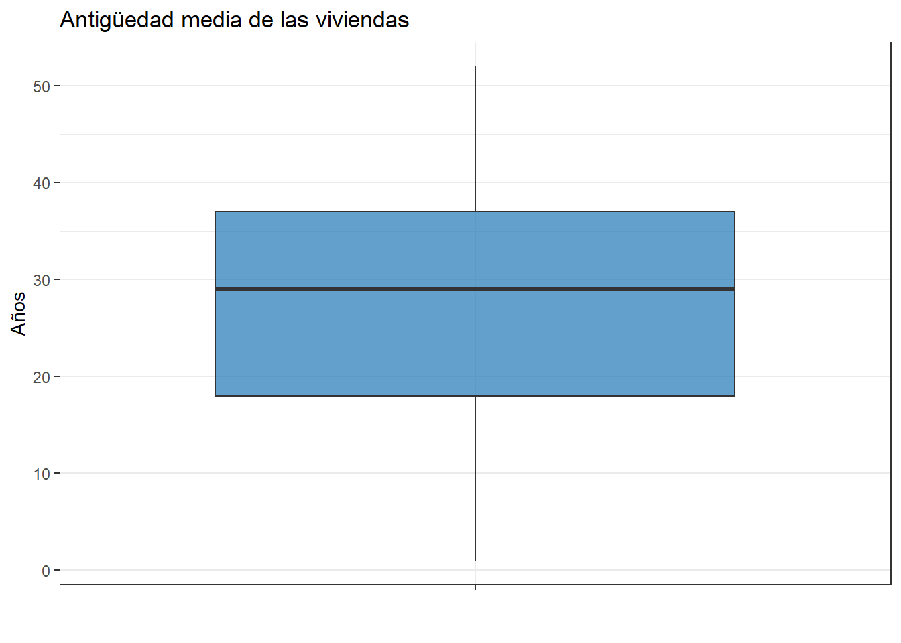
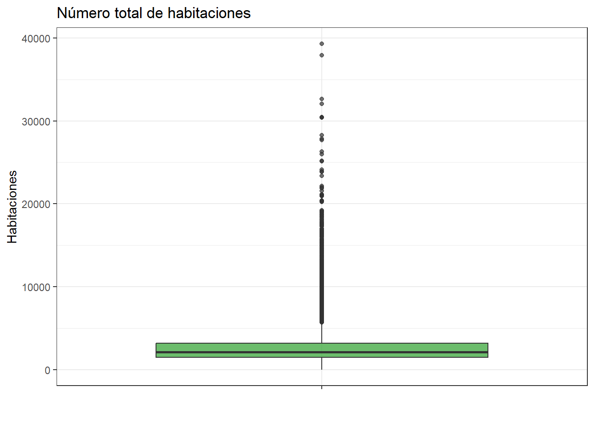
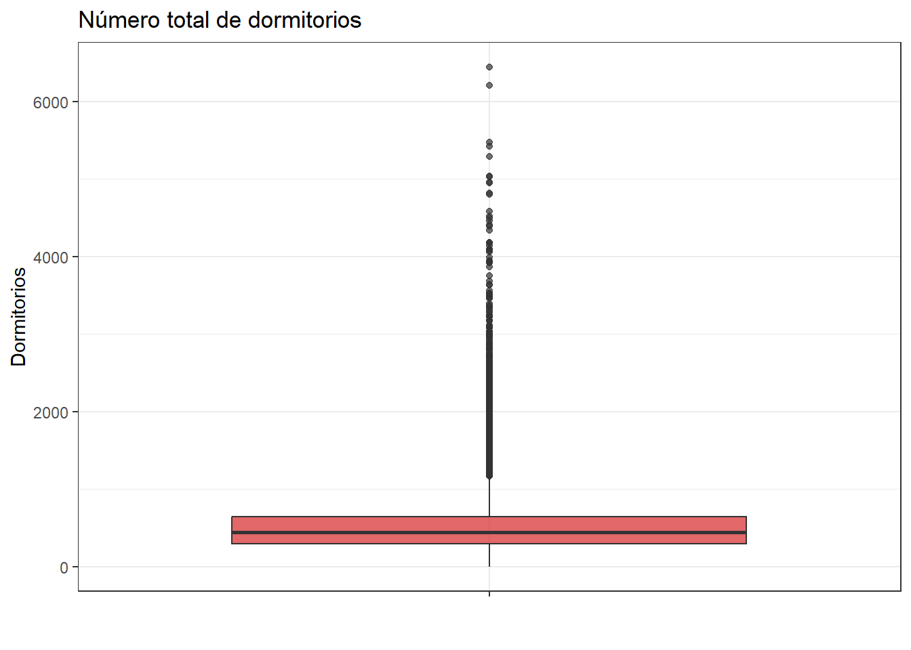
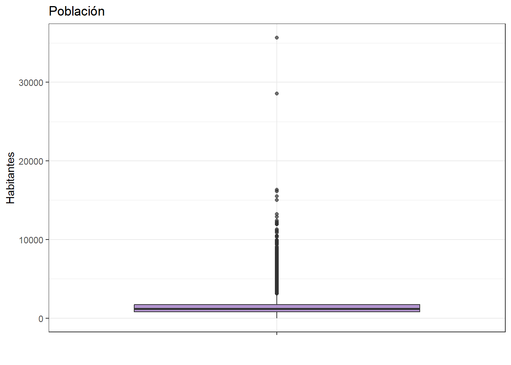
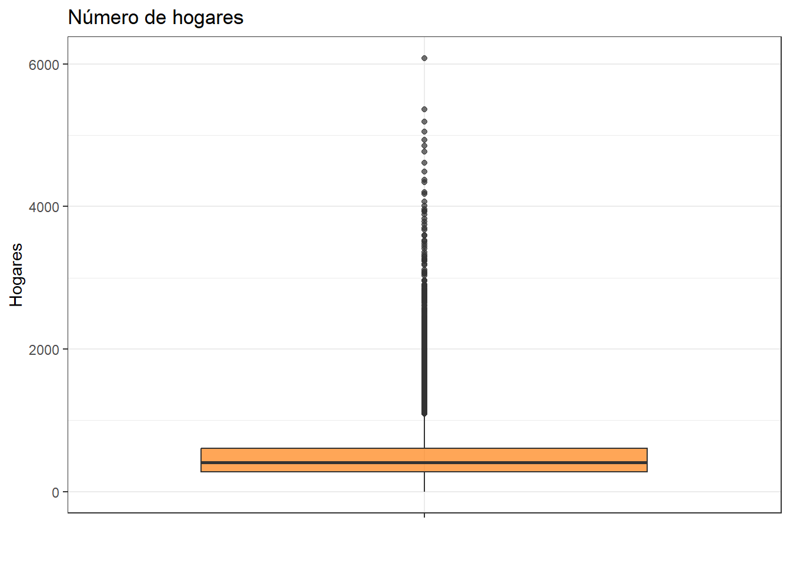
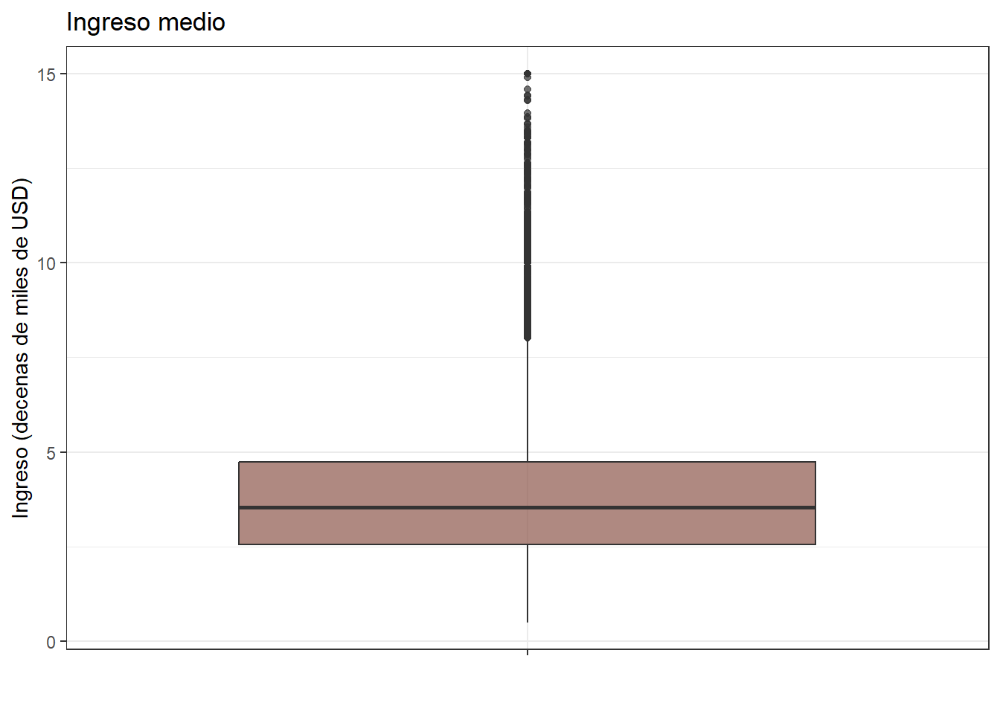
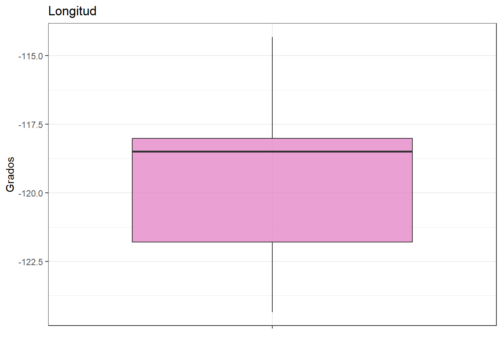
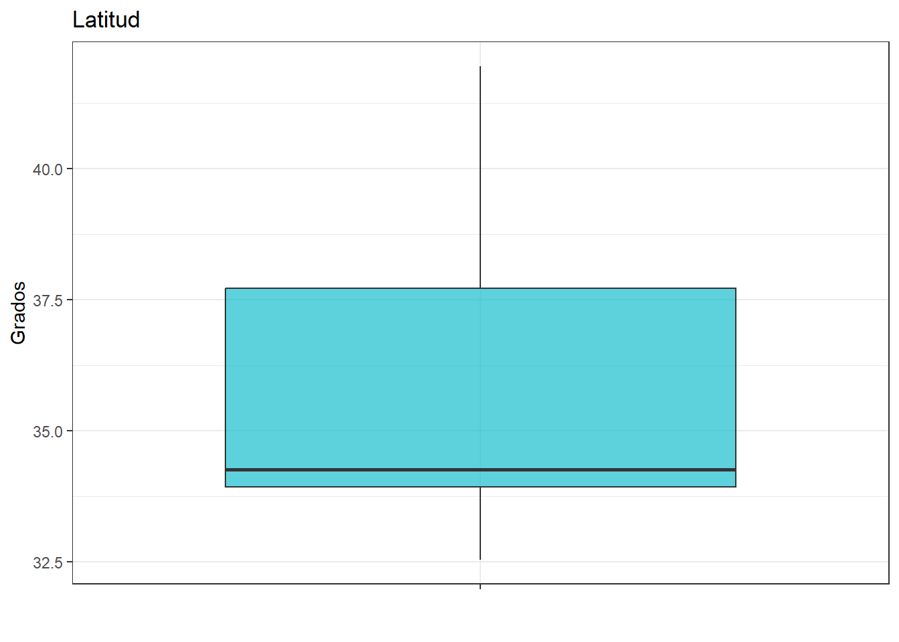
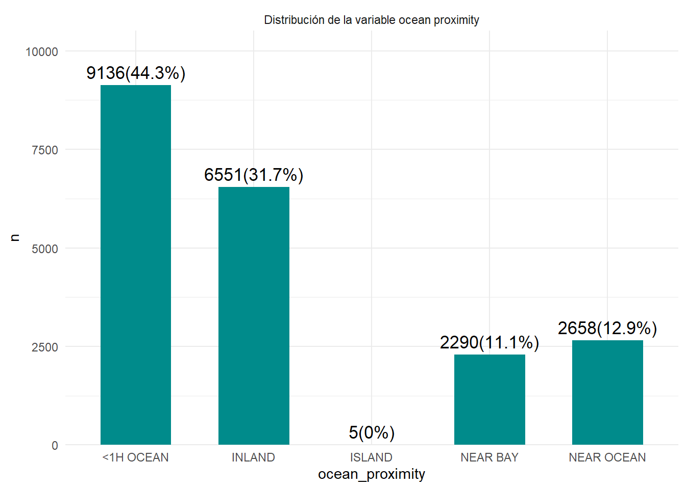

4 Análisis de las variables características (independientes)
Una vez caracterizada la variable objetivo, se procede a analizar las variables predictoras (independientes) del conjunto de datos: housing_median_age, total_rooms, total_bedrooms, population, households, median_income, longitude, latitude y ocean_proximity. Este análisis univariado posibilita la identificación de la tendencia central, dispersión y forma de distribución de cada variable, así como detectar posibles valores atípicos antes de evaluar su relación con median_house_value.
Se calcula un resumen estadístico para cada variable numérica independiente, reorganizando previamente los datos a formato largo para agruparlas y resumirlas en una sola tabla.
df %>%
select(where(is.numeric), -median_house_value) %>%
pivot_longer(
cols=everything(),
names_to='variable',
values_to='valor'
) %>%
group_by(variable) %>%
summarise(n=length(valor),
media=mean(valor),
sd=sd(valor),
mediana=median(valor),
RIC=IQR(valor),
Q1=quantile(valor,0.25),
Q3=quantile(valor,0.75),
minimo=min(valor),
maximo=max(valor),
asimetria=skewness(valor),
curtosis=kurtosis(valor))## # A tibble: 8 × 12
## variable n media sd mediana RIC Q1 Q3 minimo maximo asimetria curtosis
## <chr> <int> <dbl> <dbl> <dbl> <dbl> <dbl> <dbl> <dbl> <dbl> <dbl> <dbl>
## 1 households 20640 500. 382. 409 325 280 605 1 6082 3.41 25.1
## 2 housing_median_age 20640 28.6 12.6 29 19 18 37 1 52 0.0603 2.20
## 3 latitude 20640 35.6 2.14 34.3 3.78 33.9 37.7 32.5 42.0 0.466 1.88
## 4 longitude 20640 -120. 2.00 -118. 3.79 -122. -118. -124. -114. -0.298 1.67
## 5 median_income 20640 3.87 1.90 3.53 2.18 2.56 4.74 0.500 15.0 1.65 7.95
## 6 population 20640 1425. 1132. 1166 938 787 1725 3 35682 4.94 76.5
## 7 total_bedrooms 20640 538. 419. 438 346. 297 643. 1 6445 3.48 25.2
## 8 total_rooms 20640 2636. 2182. 2127 1700. 1448. 3148 2 39320 4.15 35.6El número total de observaciones es de 20.640 para cada variable. En términos generales, housing_median_age es la única variable con una distribución cercana a la simetría; el resto (total_rooms, total_bedrooms, population, households y median_income) presenta asimetría positiva marcada, con coeficientes entre 1.65 y 4.94, lo que indica que la mayoría de los bloques concentran valores bajos mientras unos pocos alcanzan valores extremos.
A continuación se analiza cada variable de forma individual, apoyándose en diagramas de caja y bigotes.
df %>%
ggplot(aes(x="", y=housing_median_age))+
geom_boxplot(fill="#54878f", color="black",outlier.color="darkred")+
stat_summary(fun=mean, geom='point', shape=20, size=3, color="darkgreen")+
theme_minimal()->p1
df %>%
ggplot(aes(x="", y=total_rooms))+
geom_boxplot(fill="#54878f", color="black",outlier.color="darkred")+
stat_summary(fun=mean, geom='point', shape=20, size=3, color="darkgreen")+
theme_minimal()->p2
df %>%
ggplot(aes(x="", y=total_bedrooms))+
geom_boxplot(fill="#54878f", color="black",outlier.color="darkred")+
stat_summary(fun=mean, geom='point', shape=20, size=3, color="darkgreen")+
theme_minimal()->p3
df %>%
ggplot(aes(x="", y=population))+
geom_boxplot(fill="#54878f", color="black",outlier.color="darkred")+
stat_summary(fun=mean, geom='point', shape=20, size=3, color="darkgreen")+
theme_minimal()->p4
df %>%
ggplot(aes(x="", y=households))+
geom_boxplot(fill="#54878f", color="black",outlier.color="darkred")+
stat_summary(fun=mean, geom='point', shape=20, size=3, color="darkgreen")+
theme_minimal()->p5
df %>%
ggplot(aes(x="", y=median_income))+
geom_boxplot(fill="#54878f", color="black",outlier.color="darkred")+
stat_summary(fun=mean, geom='point', shape=20, size=3, color="darkgreen")+
theme_minimal()->p6
p1+p2+p3
Para housing_median_age, el promedio es de 28.64 años (con una desviación estándar de 12.59), podemos afirmar que el 50% de las viviendas tienen una antigüedad menor o igual a 29 años, con un rango intercuartílico de 19, un 25% con antigüedad menor o igual a 18 años y un 75% por debajo o igual a 37 años.
Para total_rooms, el promedio es de 2.635,76 habitaciones (con una desviación estándar de 2.181.62), podemos afirmar que el 50% de los bloques tienen 2.127 habitaciones o menos, con un rango intercuartílico de 1.700.25, un 25% con 1.447.75 habitaciones o menos y un 75% por debajo o igual a 3.148.
Para total_bedrooms, el promedio es de 537.87 dormitorios (con una desviación estándar de 419.27), el 50% de los bloques tiene 438 dormitorios o menos, con un rango intercuartílico de 346.25, un 25% con 297 o menos y un 75% por debajo o igual a 643.25.

Para population, el promedio es de 1.425,48 habitantes (con una desviación estándar de 1.132.46), el 50% de los bloques tiene 1.166 habitantes o menos, con un rango intercuartílico de 938, un 25% con 787 o menos y un 75% por debajo o igual a 1.725.
Para households, el promedio es de 499.54 hogares (con una desviación estándar de 382.33), el 50% de los bloques tiene 409 hogares o menos, con un rango intercuartílico de 325, un 25% con 280 o menos y un 75% por debajo o igual a 605.
Para median_income, el promedio es de 3.87 (decenas de miles de USD, con una desviación estándar de 1.90), el 50% de los bloques tiene un ingreso medio menor o igual a 3.53, con un rango intercuartílico de 2.18, un 25% con 2.56 o menos y un 75% por debajo o igual a 4.74.
En todas menos housing_median_age, los coeficientes de asimetría (entre 1.65 y 4.94) confirman colas derechas marcadas, lo que explica que la mayoría de los valores son bajos y unos pocos bloques concentran valores extremos.
# Boxplot de housing_median_age
p1 <- df %>%
ggplot(aes(x = "", y = housing_median_age)) +
geom_boxplot(fill = "#1f77b4", alpha = 0.7) +
labs(
title = "Antigüedad media de las viviendas",
y = "Años",
x = ""
) +
theme_bw()p2 <- df %>%
ggplot(aes(x = "", y = total_rooms)) +
geom_boxplot(fill = "#2ca02c", alpha = 0.7) +
labs(
title = "Número total de habitaciones",
y = "Habitaciones",
x = ""
) +
theme_bw()p3 <- df %>%
ggplot(aes(x = "", y = total_bedrooms)) +
geom_boxplot(fill = "#d62728", alpha = 0.7) +
labs(
title = "Número total de dormitorios",
y = "Dormitorios",
x = ""
) +
theme_bw()p4 <- df %>%
ggplot(aes(x = "", y = population)) +
geom_boxplot(fill = "#9467bd", alpha = 0.7) +
labs(
title = "Población",
y = "Habitantes",
x = ""
) +
theme_bw()p5 <- df %>%
ggplot(aes(x = "", y = households)) +
geom_boxplot(fill = "#ff7f0e", alpha = 0.7) +
labs(
title = "Número de hogares",
y = "Hogares",
x = ""
) +
theme_bw()p6 <- df %>%
ggplot(aes(x = "", y = median_income)) +
geom_boxplot(fill = "#8c564b", alpha = 0.7) +
labs(
title = "Ingreso medio",
y = "Ingreso (decenas de miles de USD)",
x = ""
) +
theme_bw()
p7 <- df %>%
ggplot(aes(x = "", y = longitude)) +
geom_boxplot(fill = "#e377c2", alpha = 0.7) +
labs(title = "Longitud", y = "Grados", x = "") +
theme_bw()
p8 <- df %>%
ggplot(aes(x = "", y = latitude)) +
geom_boxplot(fill = "#17becf", alpha = 0.7) +
labs(title = "Latitud", y = "Grados", x = "") +
theme_bw()
housing_median_age (p1): La antigüedad promedio de las viviendas es de 28.64 años (DS = 12.59 años), con un rango que va desde 1 hasta 52 años. El boxplot no muestra ningún valor atípico según la regla de 1.5×RIC, y la caja está razonablemente centrada entre el primer cuartil (18 años) y el tercer cuartil (37 años), lo que indica una distribución cercana a la simetría. El hecho de que el máximo se detenga exactamente en 52 años sugiere que esta variable pudo haber sido truncada o agrupada en la recolección de los datos, por lo que no debe interpretarse como un límite natural del fenómeno.

total_rooms (p2): El número promedio de habitaciones por bloque es de 2.635.76 (DS = 2.181.62), una desviación estándar casi tan grande como la media, lo que ya anticipa una fuerte dispersión. El boxplot confirma que se identifican 1.287 valores atípicos (6.24% del total), todos por encima del bigote superior, con un máximo de 39.320 habitaciones frente a una mediana de apenas 2.127. Esto evidencia que la mayoría de los bloques censales son residenciales típicos, pero unos pocos concentran una cantidad de vivienda mucho mayor a la usual (posiblemente zonas de alta densidad o edificios grandes).

total_bedrooms (p3): Presenta un comportamiento equivalente al de total_rooms, como es de esperarse dado que ambas variables están naturalmente correlacionadas. El promedio es de 537.87 dormitorios (DS = 419.27), con 1.306 atípicos (6.33%) por encima del límite superior y un máximo de 6.445 frente a una mediana de 438. La alta dispersión relativa a la media sugiere, nuevamente, heterogeneidad entre bloques predominantemente pequeños y unos pocos con concentraciones habitacionales muy altas.

population (p4): Es la variable con la dispersión más extrema del conjunto, con un promedio de 1.425.48 habitantes (DS = 1.132.46) y un máximo de 35.682, muy alejado de la mediana de 1.166. El boxplot muestra 1.196 valores atípicos (5.79%) y una asimetría muy marcada (coeficiente de asimetría de 4.94), lo que indica que, aunque la mayoría de los bloques censales tienen una población moderada, existen algunos con una densidad poblacional extraordinariamente alta que podrían corresponder a zonas urbanas muy densas o incluso a posibles errores de agregación en los datos.

households (p5): El promedio de hogares por bloque es de 499.54 (DS = 382.33), con 1.220 valores atípicos (5.91%) por encima de un límite superior de aproximadamente 1.093 y un máximo de 6.082. Su comportamiento es consistente con el de population y total_rooms, lo cual tiene sentido porque las tres variables están relacionadas con el tamaño poblacional del bloque censal.

median_income (p6): El ingreso medio por bloque es de 3.87 (equivalente a $38.700 aproximadamente, ya que está escalada en decenas de miles de USD), con una desviación estándar de 1.90. Se detectan 681 valores atípicos (3.3%), la menor proporción entre las variables con asimetría marcada, y el máximo se ubica en 15.0001, un valor sospechosamente redondo que, al igual que ocurrió con median_house_value, sugiere que los ingresos también fueron truncados en ese punto para los bloques más adinerados.

longitude (p7): El promedio es de -119.57° (DS = 2.0°), con un rango entre -124.35° y -114.31°, sin valores atípicos. A diferencia de las variables anteriores, longitude no representa una cantidad que pueda interpretarse como “alta” o “baja” en sentido económico, en cambio, representa la ubicación geográfica de cada bloque dentro de California; su ligera asimetría negativa (-0.30) simplemente refleja que hay más bloques censales concentrados hacia el oeste (zona costera, valores más negativos) que hacia el este del estado.

latitude (p8): El promedio es de 35.63° (DS = 2.14°), con un rango entre 32.54° y 41.95° y sin atípicos. Su asimetría positiva moderada (0.47) indica una mayor concentración de bloques en las latitudes bajas del estado (sur de California), coherente con la alta densidad poblacional de la zona de Los Ángeles.
Ahora, se indagará sobre la variable ocean_proximity:
df %>%
count(ocean_proximity,name="n") %>%
mutate(Porcentaje=round((n/sum(n))*100,2),
variable='ocean_proximity',
categoria=as.character(ocean_proximity))%>% select(variable,categoria,n,Porcentaje)-> tabla_ocean
tabla_ocean## variable categoria n Porcentaje
## 1 ocean_proximity <1H OCEAN 9136 44.26
## 2 ocean_proximity INLAND 6551 31.74
## 3 ocean_proximity ISLAND 5 0.02
## 4 ocean_proximity NEAR BAY 2290 11.09
## 5 ocean_proximity NEAR OCEAN 2658 12.88La categoría <1H OCEAN domina con 44.3% de los bloques, seguida de INLAND con 31.7%. NEAR OCEAN (12.9%) y NEAR BAY (11.1%) tienen participación moderada, mientras que ISLAND es prácticamente residual: solo 5 observaciones (0.02%). Esta categoría tan pequeña merece atención especial más adelante; probablemente convenga excluirla o agruparla en el análisis bivariado/modelado, porque con tan pocas observaciones cualquier estadístico calculado para ese grupo (media, sd) será muy inestable.
tabla_ocean_b <- df %>%
count(ocean_proximity,name="n") %>%
mutate(Porcentaje=round((n/sum(n))*100,1),
Etiqueta= paste0(n,"(",Porcentaje,"%)"))
tabla_ocean_b %>%
ggplot(aes(x=ocean_proximity,y=n))+
geom_col(fill="#008b8b",width=0.6)+
geom_text(aes(label=Etiqueta),vjust=-0.5,size=4.5)+
facet_wrap(~'Distribución de la variable ocean proximity')+
scale_y_continuous(expand=expansion(mult=c(0,0.15)))+
theme_minimal()
Del gráfico se nota un desbalance. (<1H OCEAN e INLAND) concentran el 76% de las observaciones, mientras que ISLAND es casi invisible en la escala del gráfico. Esto sugiere que la variable, aunque útil, tiene una distribución de clases muy desigual, algo que vale la pena mencionar como limitación del dataset.